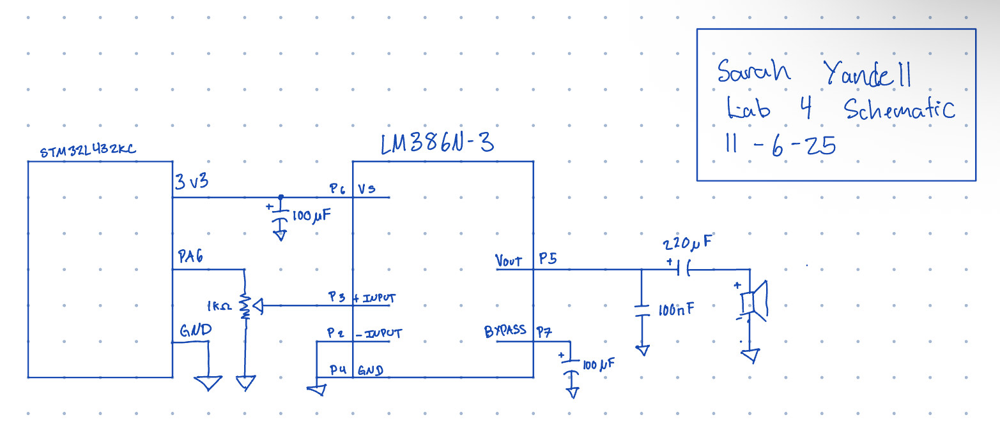
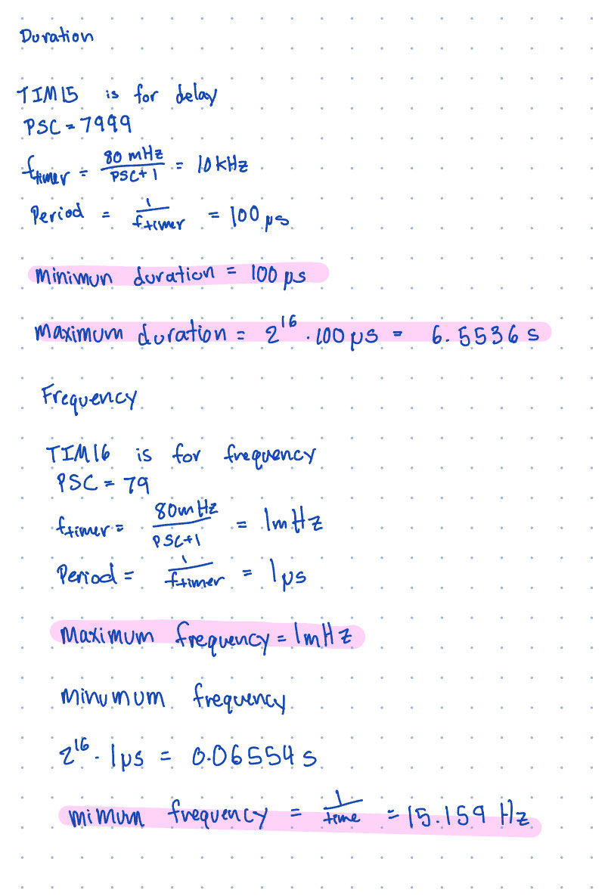
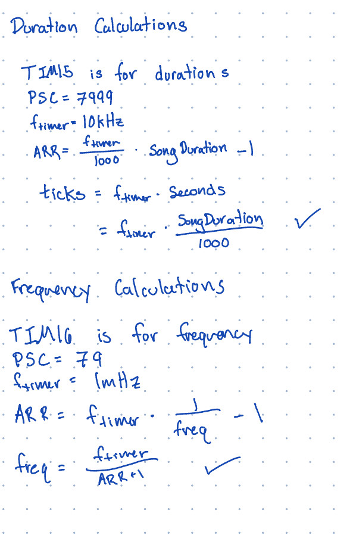

E155 Lab 4 Page
Lab 4: Digital Audio
Introduction
In this lab, I used the STM32L432KC MCU to generate audible tones by toggling the GPIO pin A6 at precise frequencies and durations, then amplified the signal with an LM386 to drive a speaker. The system played songs defined as frequency and duration pairs, including rests, a nd stopped on an end‑marker.
Design and Testing Methodology
The timer‑driven output pin on the MCU was connectyed to to the LM386 input and then to a speaker. The potentiomoter was connected to the input of the speaker to control volumn.
Technical Documentation
The source code for the project can be found in the associated Github repository.
Schematic

Figure 1 shows the schematic of the MCU, LM386 and speaker and absence of large DC offsets.Results and Discussion
The system met the lab goals. Tones were at accurate pitches. The LM386 provided sufficient volume for a speaker. Für Elise played with recognizable melody and timing. Rests were silent.
Calculations and Proof

Figure 2 should the calculations for the maximum and minum duration and frequency

Figure 3 shows the proof of the duration and frequency calculations
Conclusion
I implemented a microcontroller based audio player that converts frequency and duration pairs into audible notes using timer‑driven PWM and an LM386 amplifier. The design performed reliably and matched target pitches and durations for Für Elise and Head Shoulders Knees and Toes. I spent approximately 20 hours on this lab.
AI Prototype Summary
I put the prompt into the LLM and it gave me back this
Let’s go step-by-step and make this concrete for the STM32L432KC (Cortex-M4, 80 MHz max).
🧭 Goal
Generate output frequencies between 220 Hz and 1 kHz, and output them on a GPIO pin (e.g., to drive a buzzer or waveform test).
1️⃣ Choosing the right timer
STM32L432KC timer options
| Timer | Type | Channels | Notes |
|---|---|---|---|
| TIM1 | Advanced | 4 | Has complementary outputs, can drive GPIO directly via AF (alternate function) |
| TIM2, TIM5 | General-purpose | 32-bit | Great for low frequencies due to long counter range |
| TIM15, TIM16, TIM17 | General-purpose | 16-bit | Simpler, fewer channels |
For output frequencies around hundreds of Hz, any general-purpose timer will work. However, TIM2 (32-bit, general purpose) or TIM1 (advanced, widely supported for PWM output) are best choices.
Recommendation:
- Use TIM2 if you want simplicity and flexibility.
- Use TIM1 if you want PWM on a predefined pin (e.g., PA8, PA9, PA10).
2️⃣ Basic frequency generation math
The timer’s output frequency depends on: [ f_{out} = ]
where:
- ( f_{timer} ): clock input to the timer (often from APB1/APB2 timer clock)
- ( PSC ): prescaler register (TIMx_PSC)
- ( ARR ): auto-reload register (TIMx_ARR)
The timer counts from 0 to ARR, then resets and triggers an update or toggle.
If you want a square wave on a pin via toggle mode: [ f_{pin} = ] (because one full period needs two toggles).
3️⃣ Example calculation
Assume:
- ( f_{timer} = 80, ) (TIM2 clock)
- Desired ( f_{pin} = 440, ) (A4)
We’ll use toggle mode (one output toggle per overflow).
[ ARR = - 1]
Try with ( PSC = 7999 ) (divide by 8000):
[ ARR = - 1 ]
→ Choose ARR = 11
That gives ( f Hz ) — close enough, or tweak PSC slightly.
4️⃣ Key registers to configure
Minimum set:
| Register | Purpose |
|---|---|
TIMx_PSC |
Sets prescaler |
TIMx_ARR |
Sets auto-reload (period) |
TIMx_CCRy |
(if PWM mode) compare value |
TIMx_CCMR1 |
Capture/compare mode register (set toggle/PWM mode) |
TIMx_CCER |
Enable channel output |
TIMx_CR1 |
Enable counter |
TIMx_EGR |
Generate update event (load PSC/ARR) |
5️⃣ Example code snippet (toggle mode)
Let’s say we use TIM2, Channel 1 → PA0 (AF1).
// Enable GPIOA and TIM2 clocks
RCC->AHB2ENR |= RCC_AHB2ENR_GPIOAEN;
RCC->APB1ENR1 |= RCC_APB1ENR1_TIM2EN;
// Configure PA0 as alternate function (AF1 for TIM2_CH1)
GPIOA->MODER &= ~(3U << (0*2));
GPIOA->MODER |= (2U << (0*2)); // AF mode
GPIOA->AFR[0] &= ~(0xF << (0*4));
GPIOA->AFR[0] |= (1U << (0*4)); // AF1 = TIM2_CH1
// Timer setup for 440 Hz square wave (toggle output)
TIM2->PSC = 7999; // prescaler (divide by 8000)
TIM2->ARR = 11; // auto-reload value
TIM2->CCMR1 = (3 << 4); // OC1M = 0b011: toggle on match
TIM2->CCER |= TIM_CCER_CC1E; // enable channel 1 output
TIM2->CR1 |= TIM_CR1_CEN; // start timer
TIM2->EGR |= TIM_EGR_UG; // update registersThis gives ≈ 454 Hz on PA0.
6️⃣ For PWM (duty control) instead of toggle
Use PWM mode 1:
TIM2->CCMR1 = (6 << 4); // OC1M = 110 (PWM mode 1)
TIM2->CCR1 = ARR / 2; // 50% dutyThen connect PA0 to a buzzer or scope.
7️⃣ Adjusting the frequency dynamically
You can change ARR (or PSC) on the fly:
TIM2->ARR = new_ARR;
TIM2->EGR |= TIM_EGR_UG; // force updateYou can precompute ARR values for each desired tone.
✅ Summary
| Goal | Recommendation |
|---|---|
| Easy GPIO output | TIM2_CH1 (PA0, AF1) or TIM1_CH1 (PA8, AF1) |
| Frequency formula | ( f = ) for toggle |
| Registers | PSC, ARR, CCMRx, CCER, CR1, EGR |
| Typical prescaler | 8k–10k for 80 MHz clock gives 10 kHz base |
| Frequency range (220–1000 Hz) | ARR ≈ 18 to 3 |
If you tell me which pin you’d like to output on (e.g., PA8, PA0, PB3, etc.), I can give you the exact AF setting and initialization code for that pin and frequency range. Would you like that?
I think that the LLM is helpful in doing small tasks and explaining things when prompted well but large broad overall tasks are hard for it since it get confused lies and then gets even more wrong. Even with the manual it was still having errors.